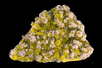

Numero atomico: 16
Massa atomica: 32,07
Temperatura di fusione (°C): 115
Temperatura di ebolizione (°C): 445
Energia di prima ionizzazione (kj/mol): 1000
Elettronegatività (secondo Pauling): 2,58
Densità: 2,09
Numeri di ossidazione: -2+4+6
Configurazione elettronica: 1s2, 2s2, 2p6, 3s2, 3p4
Maggiori Informazioni